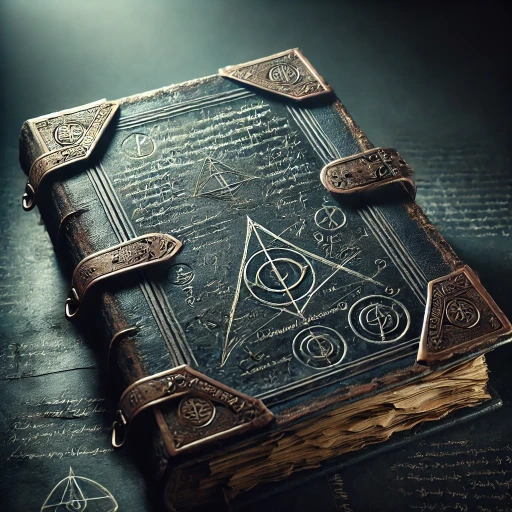

"Death… What is it but a transient barrier? Those who wield true power need not bend to its whims. The fools I have encountered think lichdom is the path, yet they lack vision. There is a higher form, one the gods themselves tremble to face. I shall not merely survive; I shall transcend!"
"The Legendary Four hold the key. I’m certain of it. Each one pulses with the essence of a greater power—a power that, if channeled correctly, will obliterate the limitations of mortal flesh. But how to harness it?"

Page 1 - The Search for True Immortality
Page 9 - The Legend of the Four Weapons
"Long ago, I wielded these four legendary weapons: Blackrazor, Whelm, Wave, and Frostrazer. Each one is an extension of my power, a tool through which I once channeled energies of a higher order. But something has shifted. These weapons that once bent to my will now resist. There is a weakness—an unfamiliar barrier within me."
"I was Kereptas, a name feared by all, yet I find myself changed. The shell I inhabit is not the one I remember. I sense limitations that never existed before, as if I am bound by flesh that is not my own. This… form… it weakens me, and I do not understand why."
"The weapons still pulse with the promise of true godhood, but in my present state, I cannot wield them all at once as I once did. I feel their rejection, as if they deem me unworthy. But I know it is not so. I am Kereptas. The path to uniting them lies within me; I only need to reclaim my lost strength."
Page 13 - A Theory of Immortality through the Weapons
"Each weapon resonates with a unique frequency of the Weave, drawing upon elemental and otherworldly forces. Blackrazor feasts on souls, Wave bends the sea, Whelm draws upon the bedrock of the earth, and Frostrazer channels the depths of winter’s fury. If one could align oneself with each frequency…"
"Imagine, immortality not as a lich’s hollow form but as a god—a living, breathing embodiment of the forces these weapons contain. I shall be eternal, not through undeath, but through the fusion of essence."
Page 27 - The Lost Ceremony
"The ceremony! Fragments suggest that it is a rite of great peril. It requires a confluence of power unlike any seen since the days of Netheril. But how? How does one attune to all four? The body would tear itself apart under the strain. Only a being of extraordinary fortitude could survive such a process."
"The ritual must be conducted in a place steeped in raw power, perhaps even within the remnants of an ancient Netherese ruin… the rune chamber in the Lost Spire could serve."
"I have gathered the weapons—Blackrazor, Whelm, Wave, and Frostrazer are in my possession once more. They pulse with the strength I once commanded. Yet in this form, they resist me. Their power slips from my grasp, elusive, as if mocking my inability to wield them all at once."
"Perhaps… a new path lies ahead. I could find another to attune to Frostrazor, and then take control of that vessel as my own. A mighty host—a frost giant, perhaps—could withstand its might. But even that experiment has its risks. Still, such a method might allow me to wield all four without tearing myself apart."
Page 29 - The Frost Giant Plan
"To bear Frostrazer, one must be strong of body and soul. After much searching, I found a suitable frost giant host. If I could see this plan through, he would attune to Frostrazer, and through the k-spells, he would become an extension of my will. Using him as my vessel, wielding Frostrazor and thus unlocking all four weapons would become possible. This gamble must succeed, for the secrets of true ascension lie within the weapons’ unified power."
"Frostrazor… it rejected every other host I attempted. But a frost giant has the strength to endure its fury. With him as my anchor, I could wield each weapon’s force, bending their essence to my will without fear of my own body’s limitations."
Page 45 - The Anti-Magic Case
"As a failsafe, I have concealed Whelm, Wave, and Blackrazor within an anti-magic case, hidden beneath the floorboards of my rented room at the White Lady Inn. I paid for three months—a trivial sum to ensure no one disturbs my treasure before I am ready."
"I will return for them soon. With the completion of the ceremony, I will step beyond the mortal coil, beyond the chains that bind lesser beings to death’s embrace. And yet… Frostrazer… Frostrazer slips further from my grasp with every passing day. Curse those Ten-Towners and their cursed persistence."
Page 59 - Vellynne Harpell
"The woman came to me, her ambition glinting as sharp as any blade. Vellynne Harpell, she calls herself—a necromancer of some repute, draped in the pretense of Arcane Brotherhood authority. She craves secrets, perhaps even more fervently than I. Her interest lies in ancient powers, though she knows not where they might lead her."
"She spoke of an Emperor Penguin, a creature of myth and might, revered by those who dabble in the arcane mysteries of the North. ‘Pengu,’ she called it—a being that, according to whispers, might transcend the boundaries between life and death, creation and destruction. A force, perhaps, that could amplify the power I seek."
"With subtlety, I pressed her, unraveling whatever slivers of insight she might possess. Alas, her knowledge was insufficient, riddled with lore that was likely fiction crafted by fools. And yet, the notion of Pengu lingered—an entity hidden in frozen wastes, rumored to resonate with energies capable of bending time and fate. I gave her hints, threads to pull, directing her gaze toward the Spire, hoping the hazards within might strip her of her incessant meddling."
"If she survives the Spire and brings back anything of value, so be it. I will retrieve what she finds—by force, if necessary. Until then, I shall bide my time, weaving a path toward true immortality. The weapons I have secured here will serve my purpose… eventually. And if this ‘Pengu’ exists, it shall not be Vellynne who finds its favor."
Page 64 - Journey to the Cave of the Frost Giants
"The time has come. With Frostrazor at my side, I travel now to the Cave of the Frost Giants. Their leader awaits—a creature of immense strength, chosen carefully. I carry with me not only the weapon but the knowledge to bind him to my will with the k-spell. Once infected, he will fall under my command, the perfect vessel to bear Frostrazor."
"This final experiment holds my last hopes. By infecting him with the k-spell and inducing attunement to Frostrazor, I will secure a host capable of unlocking the Four’s combined power. The giants understand loyalty, a power I will twist and reforge. His strength, Frostrazor’s fury, and the ritual I’ve prepared shall grant me my prize: true, unyielding power beyond death."
"Soon, I shall become what the world has not seen—immortality, not bound by flesh but strengthened by it. And if this experiment succeeds, my ascension is all but inevitable."